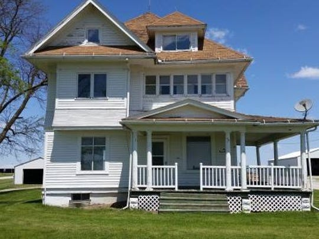
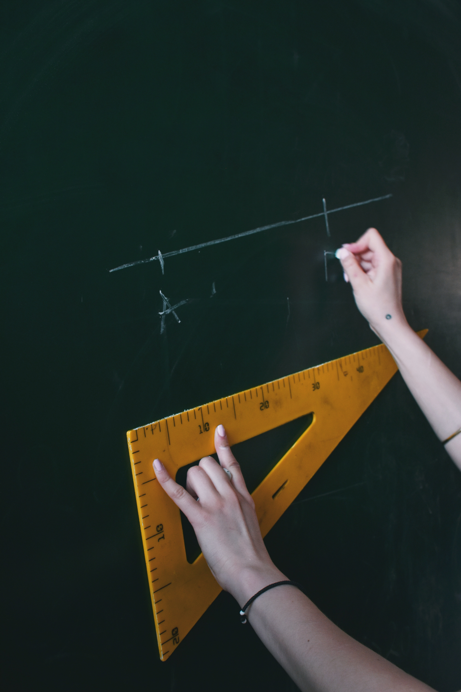

This is Donna Vanhessche. She’s an Iowa native (born and raised), and lives in Council Bluffs. She comes from a very large family with 9 brothers and sisters (7 biological, 2 step), with whom she’s still close to and visits as often she can. Donna is the second youngest sibling. Her oldest brother is 18 years her senior! All of her biological siblings name’s begin with the letter “D”.
Growing up, her family lived in a large farmhouse near Iowa City. Despite the large house, the family was even larger, and most of the siblings had to double and sometimes triple up in bed rooms. All of her siblings had some sort of talent that they excelled in. Some were good at sports, some were good at fixing things, and some were good at art. Donna was the singer of the family and often sang in her church choir and musical productions at school.
After high school, Donna attended the University of Iowa where she earned a degree in Psychology. Despite being the second youngest in the family, she was the first sibling to graduate college. After graduating she enrolled at the University of Northern Iowa, where she earned a teaching degree in special education. She's been working for the Council Bluffs school system now for over 25 years!
Donna's immediate family includes her husband John, and their 4 children - Nathan, Nolan, Ian, and Connor - all of whom are in college. She also lives with two dogs - Dottie and Amber, and a cat named Carson Pawmer.
Despite a family and a career that keeps her busy, Donna finds time to enjoy quite a number of hobbies and pasttimes. Along with her husband, she's an avid cyclist and can often be found cycling the various trails around Council Bluffs. One of her favorite cycling activities is participaitng in the Thursday night "Taco Ride" along the Wabash Trace Nature Trail. Most recently, she participated in "Biketoberfest", enjoing the 16 mile ride around Laka Manawa and the german sytle festival held afterwards. When she's not cycling she enjoys watching the Iowa Hawkeye's football team.
She's also a passionate crocheter, and has made hundreds of crochet projects for family and friends over the years. The closets in her house are literally stuffed with yarn and yarn accessories, and she's taken over one bedroom to serve as her studio. Needless to say, her cat Carson is quite happy chasing little balls of yarn all over the house! She recently started selling her projects to people other than family and friends, and participates in craft shows around the town.